## Install extra packages (if needed):
## - dimensio: multivariate analysis
## - folio: datasets
## - tabula: visualization
# install.packages(c("dimensio", "folio", "tabula"))
# Load packages
library(kairos)Introduction
The matrix seriation problem in archaeology is based on three conditions and two assumptions, which Dunnell (1970) summarizes as follows.
The homogeneity conditions state that all the groups included in a seriation must:
- Be of comparable duration,
- Belong to the same cultural tradition,
- Come from the same local area.
The mathematical assumptions state that the distribution of any historical or temporal class:
- Is continuous through time,
- Exhibits the form of a unimodal curve.
Theses assumptions create a distributional model and ordering is accomplished by arranging the matrix so that the class distributions approximate the required pattern. The resulting order is inferred to be chronological.
Reciprocal ranking
Reciprocal ranking iteratively rearrange rows and/or columns according to their weighted rank in the data matrix until convergence (Ihm 2005).
For a given incidence matrix \(C\):
- The rows of \(C\) are rearranged in increasing order of: \[ x_{i} = \sum_{j = 1}^{p} j \frac{c_{ij}}{c_{i \cdot}} \]
- The columns of \(C\) are rearranged in a similar way: \[ y_{j} = \sum_{i = 1}^{m} i \frac{c_{ij}}{c_{\cdot j}} \]
These two steps are repeated until convergence. Note that this procedure could enter into an infinite loop.
## Build an incidence matrix with random data
set.seed(12345)
bin <- sample(c(TRUE, FALSE), 400, TRUE, c(0.6, 0.4))
incidence1 <- matrix(bin, nrow = 20)
## Get seriation order on rows and columns
## If no convergence is reached before the maximum number of iterations (100),
## it stops with a warning.
(indices <- seriate_rank(incidence1, margin = c(1, 2), stop = 100))
#> <RankPermutationOrder>
#> Permutation order for matrix seriation:
#> - Row order: 6 15 12 14 2 5 10 8 13 20 16 18 19 7 9 1 3 11 17 4...
#> - Column order: 9 4 2 8 3 1 6 5 16 20 15 14 12 17 13 10 19 7 11 18...
## Permute matrix rows and columns
incidence2 <- permute(incidence1, indices)
## Plot matrix
tabula::plot_heatmap(incidence1, col = c("white", "black"))
tabula::plot_heatmap(incidence2, col = c("white", "black"))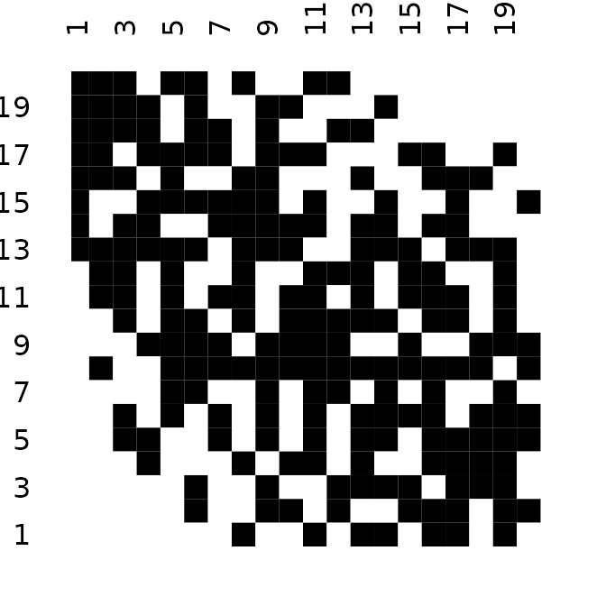
The positive difference from the column mean percentage (in french “écart positif au pourcentage moyen”, EPPM) represents a deviation from the situation of statistical independence (Desachy 2004). As independence can be interpreted as the absence of relationships between types and the chronological order of the assemblages, EPPM is a useful graphical tool to explore significance of relationship between rows and columns related to seriation (Desachy 2004).
## Replicates Desachy 2004
data("compiegne", package = "folio")
## Plot frequencies and EPPM values
tabula::seriograph(compiegne)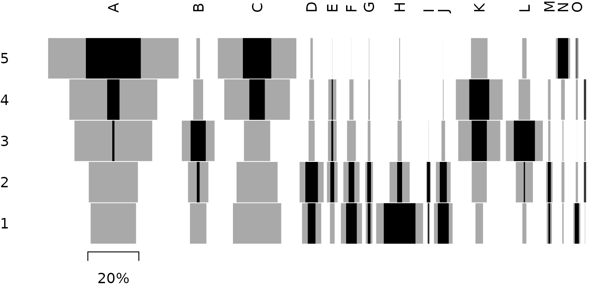
## Get seriation order for columns on EPPM using the reciprocal ranking method
## Expected column order: N, A, C, K, P, L, B, E, I, M, D, G, O, J, F, H
(indices <- seriate_rank(compiegne, EPPM = TRUE, margin = 2))
#> <RankPermutationOrder>
#> Permutation order for matrix seriation:
#> - Row order: 1 2 3 4 5...
#> - Column order: 14 1 3 11 16 12 2 5 9 13 4 7 15 10 6 8...
## Permute columns
compiegne_permuted <- permute(compiegne, indices)
## Plot frequencies and EPPM values
tabula::seriograph(compiegne_permuted)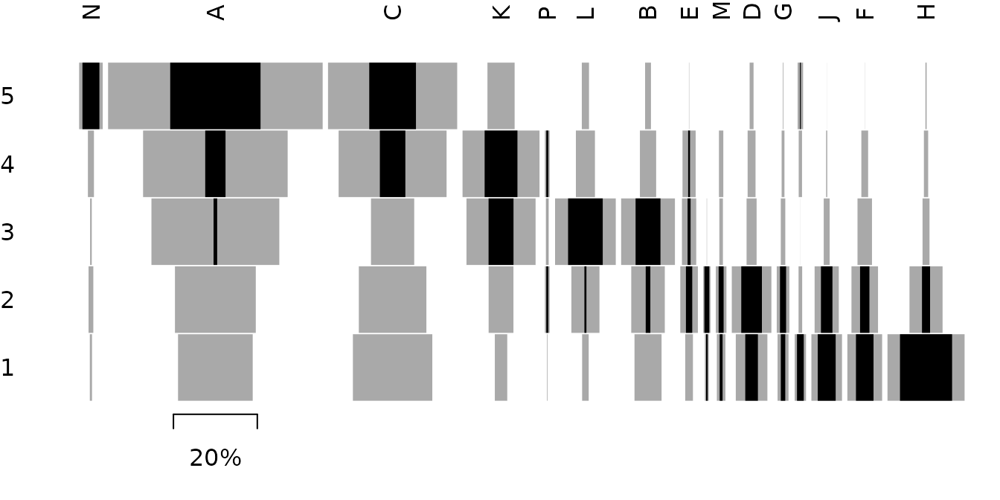
Correspondence analysis
Seriation
Correspondence Analysis (CA) is an effective method for the seriation of archaeological assemblages. The order of the rows and columns is given by the coordinates along one dimension of the CA space, assumed to account for temporal variation. The direction of temporal change within the correspondence analysis space is arbitrary: additional information is needed to determine the actual order in time.
## Data from Peeples and Schachner 2012
data("zuni", package = "folio")
## Ford diagram
par(cex.axis = 0.7)
tabula::plot_ford(zuni)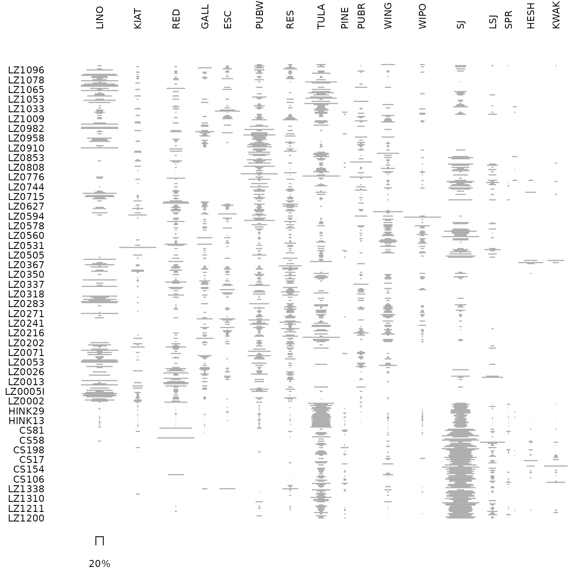
## Get row permutations from CA coordinates
(zun_indices <- seriate_average(zuni, margin = c(1, 2)))
#> <AveragePermutationOrder>
#> Permutation order for matrix seriation:
#> - Row order: 372 387 350 367 110 417 364 407 357 160 344 348 35...
#> - Column order: 18 14 17 16 13 15 9 8 12 11 6 7 5 10 4 2 3 1...
## Plot CA results
dimensio::biplot(zun_indices)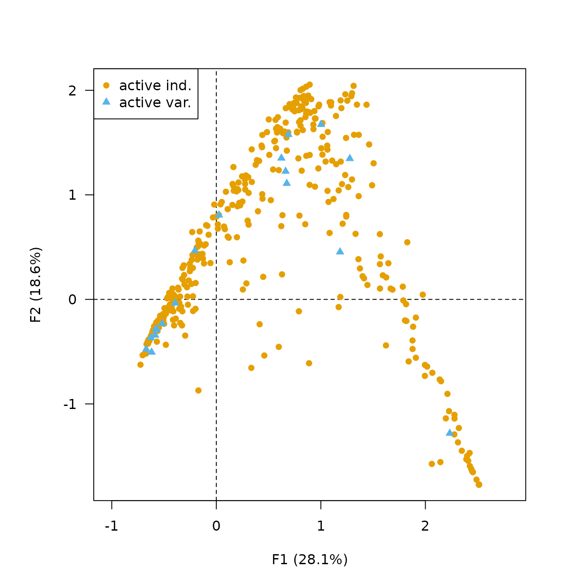
## Permute data matrix
zuni_permuted <- permute(zuni, zun_indices)
## Ford diagram
par(cex.axis = 0.7)
tabula::plot_ford(zuni_permuted)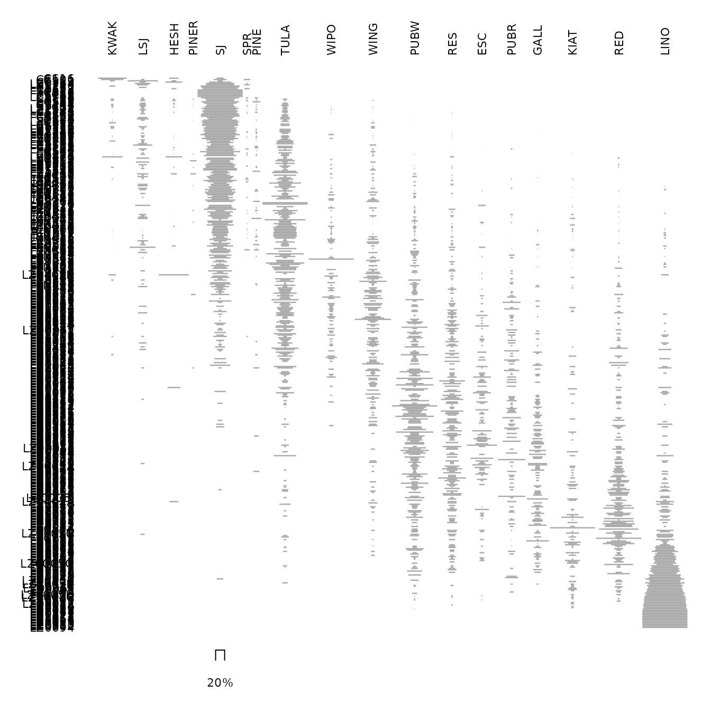
Refining
Peeples and Schachner (2012) propose a
procedure to identify samples that are subject to sampling error or
samples that have underlying structural relationships and might be
influencing the ordering along the CA space. This relies on a partial
bootstrap approach to CA-based seriation where each sample is replicated
n times. The maximum dimension length of the convex hull
around the sample point cloud allows to remove samples for a given
cutoff value.
According to Peeples and Schachner (2012), “[this] point removal procedure [results in] a reduced dataset where the position of individuals within the CA are highly stable and which produces an ordering consistent with the assumptions of frequency seriation.”
## Partial bootstrap CA
## Warning: this may take a few seconds!
zuni_boot <- dimensio::bootstrap(zun_indices, n = 30)
## Bootstrap CA results for the rows
## (add convex hull)
zuni_boot |>
dimensio::viz_rows(col = "lightgrey", pch = 16) |>
dimensio::viz_hull(col = adjustcolor("#004488", alpha = 0.5))
## Bootstrap CA results for the columns
zuni_boot |>
dimensio::viz_columns(pch = 16)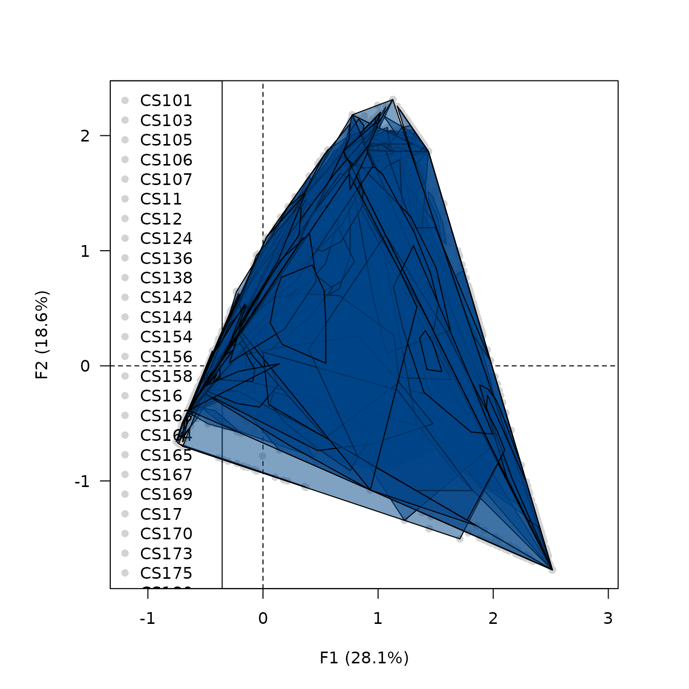
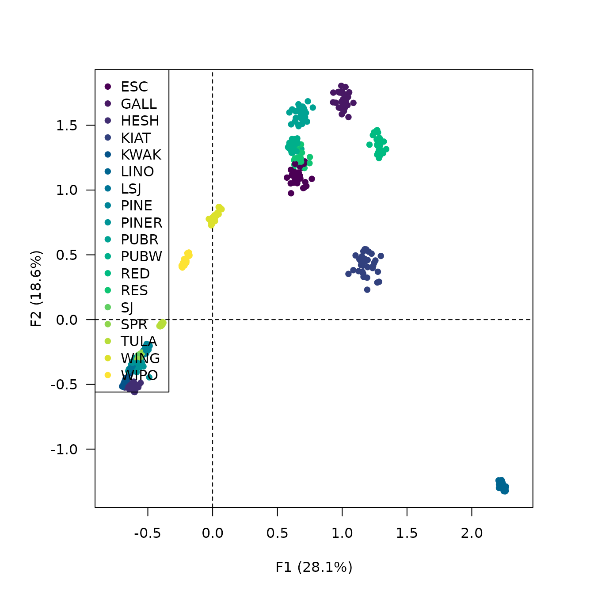
## Replicates Peeples and Schachner 2012 results
## Samples with convex hull maximum dimension length greater than the cutoff
## value will be marked for removal.
## Define cutoff as one standard deviation above the mean
fun <- function(x) { mean(x) + sd(x) }
(zuni_refine <- seriate_refine(zun_indices, cutoff = fun, margin = 1))
#> <RefinePermutationOrder>
#> Permutation order for matrix seriation:
#> - Row order: 372 350 387 367 110 417 364 357 407 160 344 348 35...
#> - Column order: 17 18 14 16 13 15 9 8 12 11 6 10 7 5 4 2 3 1...
#> Partial bootstrap refinement:
#> - Cutoff value: 1.77
#> - Rows to keep: 360 of 420 (86%)
## Plot CA results for the rows
dimensio::viz_rows(zuni_refine, highlight = "observation", pch = c(16, 15))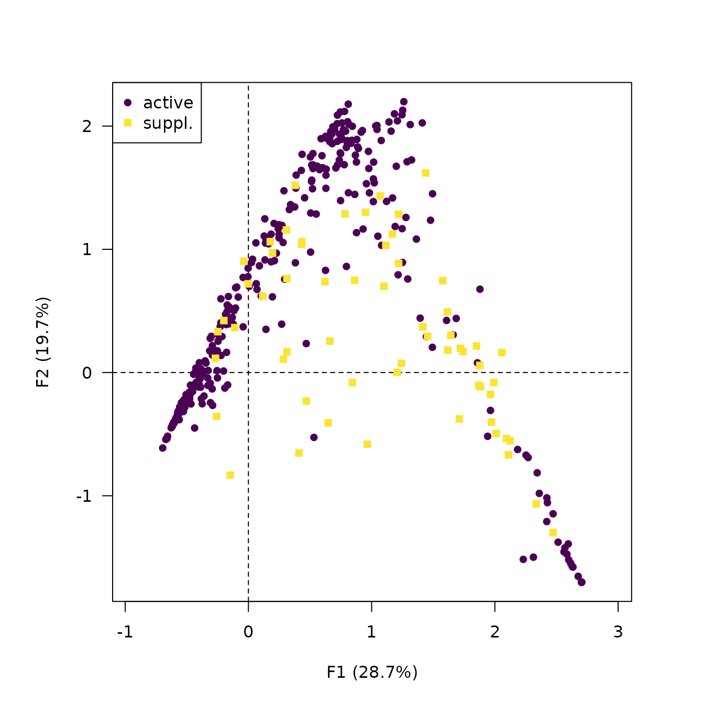
## Histogram of convex hull maximum dimension length
hist(zuni_refine[["length"]], xlab = "Maximum length", main = "")
abline(v = zuni_refine[["cutoff"]], col = "red")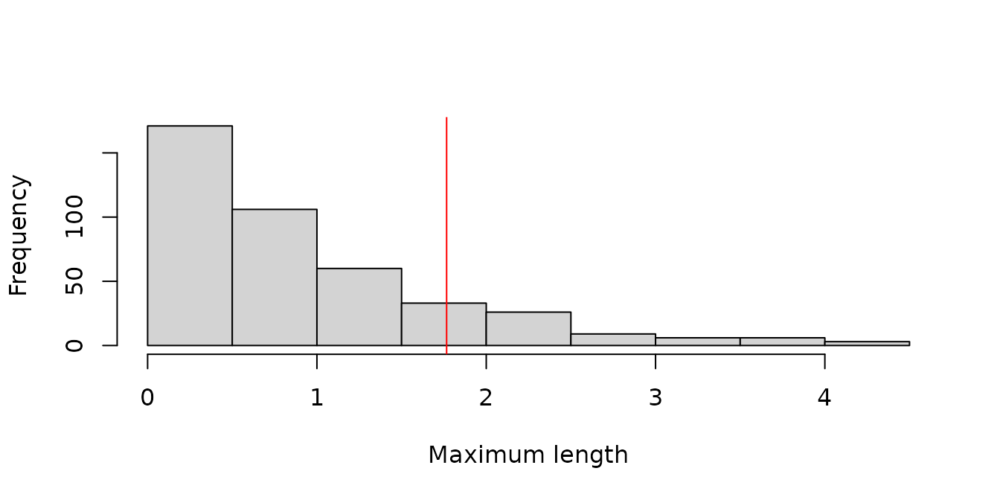
## Permute data matrix
zuni_permuted2 <- permute(zuni, zuni_refine)
## Ford diagram
par(cex.axis = 0.7)
tabula::plot_ford(zuni_permuted2)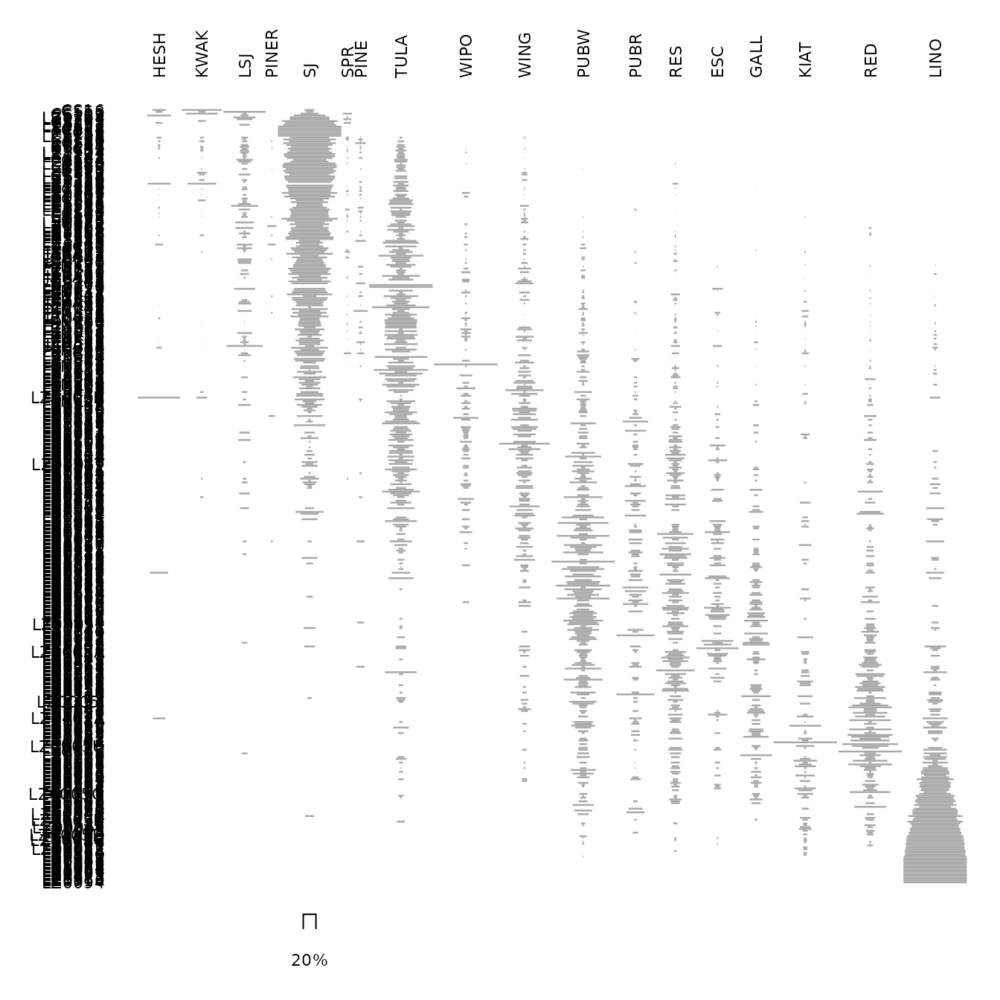